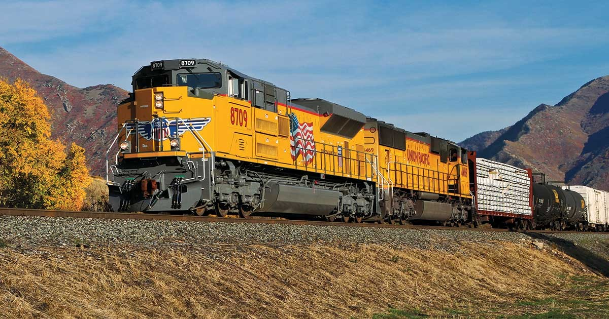

Übernahme

Union Pacific −1,5 %, Norfolk Southern −1 %: Bahnaufsicht gibt Rede von Konzernchef Vena frei
$UNP
Die US-Bahnaufsicht STB lehnt es ab, eine Rede von Union-Pacific-Chef Jim Vena geheim zu halten. Darin soll er Kunden, die die Übernahme von Norfolk Southern ablehnen, mit höheren Gebühren gedroht haben. Beide Aktien geben nach.

Kurz gesagt
- Vorwurf, kein Urteil: Die STB gibt die Rede frei, in der Vena Kunden gedroht haben soll (laut MLex, nicht von Union Pacific bestätigt). Über den Deal entscheidet sie damit nicht.
- Warum das zählt: Laut STB können Belege für angedrohte Vergeltung für Marktmacht und möglichen Missbrauch relevant sein.
- Beide Aktien geben nach: Union Pacific lag am Donnerstagnachmittag bei 271,20 Euro (−1,45 %), Norfolk Southern fiel von 308,55 Euro (13:12 Uhr) auf 305,15 Euro (14:11 Uhr).
- Zeitplan bleibt offen: Die Parteien rechnen mit dem Abschluss Anfang 2027, die Prüfung läuft seit Januar.
Union Pacific und Norfolk Southern: Rede als neuer Prüfstein
Die US-Bahnaufsicht Surface Transportation Board (STB) hat einen Antrag von Union Pacific abgelehnt, eine Keynote-Rede von Konzernchef Jim Vena geheim zu halten. Das berichtet der Dienst MLex am Donnerstag, 5. November 2026. In der Rede soll Vena Frachtkunden, die den Kauf von Norfolk Southern ablehnen, höhere Gebühren in Aussicht gestellt haben. Die Behörde begründete ihre Entscheidung damit, dass Belege für tatsächliche oder angedrohte Vergeltungsmaßnahmen für weitere Aspekte der Prüfung relevant sein könnten, insbesondere für Marktmacht und deren möglichen Missbrauch.
Wichtig für die Einordnung: Die Aussagen zur Rede stammen aus dem Bericht und sind Vorwürfe. Union Pacific hat sich nach den vorliegenden Informationen dazu nicht geäußert. Die Entscheidung der STB betrifft die Offenlegung eines Dokuments, nicht die Genehmigung der Fusion.
Das Thema ist nicht neu
Schon im Juli hatte die Senatorin Tammy Baldwin die STB aufgefordert, eine aus ihrer Sicht „kaum verhüllte Drohung“ Venas bei einem Branchenevent im März zu klären. Die Behörde antwortete am 22. Juli in einer Entscheidung zu Auskunftspflichten, sie werde Vergeltung gegenüber Kunden „nicht tolerieren“, und hielt ihr Verfahren für alle Beteiligten offen. Die neue Entscheidung knüpft daran an und macht den Wortlaut der Rede nun für das Verfahren und die Öffentlichkeit zugänglich.
Die Übernahme im Überblick
Union Pacific will Norfolk Southern für rund 85 Mrd. US-Dollar kaufen, das entspricht 320 US-Dollar je Aktie. Norfolk-Aktionäre sollen eine Union-Pacific-Aktie plus 88,82 US-Dollar in bar erhalten und würden danach etwa 27 % am gemeinsamen Konzern halten. Entstehen würde das erste Bahnnetz von Küste zu Küste in den USA. Die Aktionäre beider Unternehmen haben dem Zusammenschluss zugestimmt. Die Aufsicht muss ihn aber noch genehmigen.
Der Weg dorthin verläuft zäh:
- 16. Januar 2026: Die STB weist den ersten Antrag als unvollständig zurück.
- 30. April: Die Unternehmen reichen einen ergänzten Antrag ein.
- 28. Mai: Die STB nimmt ihn an, setzt das Verfahren aber aus und fordert weitere Angaben. Damals gaben beide Aktien nach.
- Gegner: Eine Koalition aus unter anderem BNSF, CPKC, der Gewerkschaft Teamsters, dem US-Bauernverband und sechs Generalstaatsanwälten lehnt die Fusion ab.
Die Unternehmen rechnen mit einem Abschluss Anfang 2027. Der Fusionsvertrag läuft bis zum 28. Januar 2028 und verlängert sich automatisch, wenn die Prüfung länger dauert. Scheitert der Zusammenschluss an der STB oder an nicht tragbaren Auflagen, muss Union Pacific eine Gebühr von 2,5 Mrd. US-Dollar zahlen.
Kursreaktion
Die Union-Pacific-Aktie notierte am Donnerstag um 14:32 Uhr laut Börse Express bei 271,20 Euro und damit 1,45 % unter dem Vortag. Für die Norfolk-Southern-Aktie nennt der Handelsplatz Lang & Schwarz 308,55 Euro um 13:12 Uhr und 305,15 Euro um 14:11 Uhr, also rund 1 % weniger binnen einer Stunde. Ein Vortagesvergleich liegt für Norfolk Southern nicht vor. Union Pacific hatte am Vortag in den USA bei 308,53 US-Dollar geschlossen (+1,7 %) und lag damit nahe dem 52-Wochen-Hoch von 315,99 US-Dollar. Der Rückgang folgt also auf einen starken Lauf.
Einordnung für Anleger
Für den Kurs zählt weniger die Rede selbst als die Frage, ob sie die Prüfung verlängert oder zu strengeren Auflagen führt. Eine Verzögerung würde die erhofften Kostenvorteile später wirksam machen und die Unsicherheit für beide Aktien verlängern. Dagegen spricht: Die Behörde hat nichts entschieden, die Vorwürfe sind unbewiesen, und beide Aktionärskreise haben bereits zugestimmt. Auch kann die Aufsicht Auflagen erteilen, statt die Fusion zu verbieten. Die Angaben sind keine Anlageberatung.
Quellen: MLex-Bericht über ad-hoc-news.de, Bloomberg Law zur STB-Warnung vom 22. Juli, Zeitleiste zur Fusion (Wikipedia), Börse Express zum Kurs, Gotrade zum Schlusskurs vom 4. November.
Hinweis: Dieser Text dient der allgemeinen Information und ist weder Anlage-, Steuer- noch Rechtsberatung. Kapitalanlagen sind mit Risiken verbunden, bis hin zum Totalverlust.